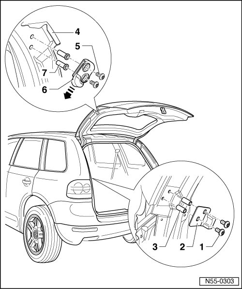

Trunk / Liftgate Latch: Adjustments
Rear Lid
Guide Wedge and Guide Pin, Adjusting

- The guide pin must be adjusted in the rear lid before adjusting the guide wedges.
- Tighten the bolts - 1 - and - 5 - just far enough until the bolt heads touch the guide wedge - 6 - and guide pin - 2 -.
- It must be possible to adjust guide wedges and guide pin in oblong holes using little force.
- Pull out guide wedges - 6 - on rear lid - 4 - as far as possible before adjusting - arrow -.
- To adjust, close rear lid in the center using light pressure.
- Open the rear lid and tighten bolts - 1 - and - 5 - to 6 Nm.